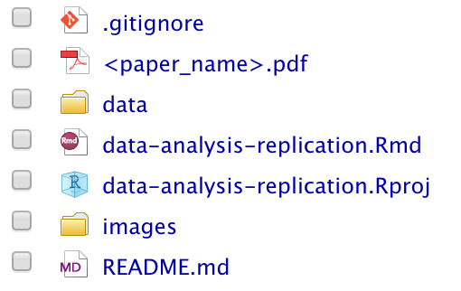
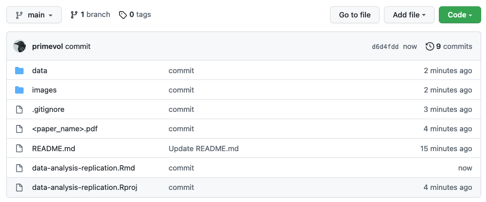

Data Analysis Replication
Objectives
The objective of this assignment is to use your skills in R to replicate as closely as you can a set of statistical analyses and results reported in a paper of your choosing from the primary literature in your field.
What to Do
You will need to create a new RStudio project and a “.qmd” report detailing your work on replicating the results presented in the paper you choose. You should start your reanalysis report with a text description of the study and of the specific data and reanalyses you will be doing, to orient your reader. Outline (briefly!) the goal of the original paper, the data set used, and the analyses conducted, then describe which ones you will replicate. You should also demonstrate how you read in any data file(s) and show a few lines of raw data in your output (e.g., using head()).
Note that we will be looking for you to clearly take your reader through all of the elements of data manipulation, analysis, and, if appropriate, visualization. You should provide as much coding detail, explanation, and output tables as necessary to compare your results to those published!
You do not need to replicate ALL of the analyses presented in the paper (although the more the better)! At a bare minimum, you need to repeat at least four analyses, at least one of which needs to be a descriptive statistical analysis, one needs to be a visualization, one an inferential statistical analysis, and one a second example of one of these types of analysis.
As assessment, we will be looking at several different elements of your report and code for this assignment. Below, we outline some of the main things:
Organization and Logistics
- Repo set up on GitHub, named correctly, and shared with me (URL submitted via Canvas)
- PDF of paper included in the top level of the repository
- “.qmd” file for your report stored at the top level of the repo
- “.qmd” file includes text and code and embedded images/tables from the paper for comparison
- “.qmd” file is well organized into subsections, including blocks of explanatory text and R code blocks, plus output
- R code follows a consistent convention with respect to variable and function names and formatting
- File(s) with original data are included in a directory (folder) called “data” within the repo
- Images from the original paper that are referenced in the report stored in a separate directory called “images” within the repo
Introduction and Framing
- Report includes a short, introductory description of the goal of the original paper, the data used, the analyses conducted, and the conclusions of the original study
- Report outlines the specific data and reanalyses you will be doing
- Code correctly loads all required packages not included in {base} R
- “.qmd” file renders and produces HTML output without requiring edits or additional modifications
- “.qmd” file includes a dictionary defining variable names used in dataset and R code
- R code successfully reads in data file(s) from the local “data” directory within the repo and shows a few lines of raw data (e.g., using
head()) - R code successfully reads in any image file(s) for comparison from within the local “image” directory within the repo
Data Analysis/Visualization Replications
For each of the analyses/visualizations being done…
- Text of the report clearly takes the reader through all of the elements of data manipulation/analysis/visualization, from raw data to presentation
- Report text is thorough and the R code is well-documented and provides as much explanation and output (tables, figures, etc.) as necessary to understand how the code works
- Report includes side-by-side comparisons of the results of the replication attempts to the published original results
Discussion and Reflection
- Report includes a narrative summary about how successful the analysis replications were or were not - i.e., how well do the replicated results compare to those presented in the original paper?
- Report discusses and addresses any challenges encountered… missing data, unclear information about how data were processed in the original publication, etc.
- Report discusses where and possible reasons why the analysis replications might differ from the authors’ original results
What to Turn In
Start a new GitHub repo and R project and using one of the methods outlined in Module 06. You should call it “data-analysis-replication”.
The top level of your repo should include a “.qmd” file called “data-analysis-replication.qmd” where you thoroughly describe and run the code for all of the steps in your reanalysis. You can begin with the standard Quarto document template created by choosing File > New File and the desired file type and then choosing HTML as the “Default Output Format”. Be sure to remove any extraneous code that is included, by default, in the template.
The top level of your repository should also include a PDF copy of the paper you are reanalyzing data from.
Within the repository, make a “data” directory in which you include any “.csv” or “.xlsx” or similar files that contain the original data for the paper as you either downloaded them as supplementary material or received them from the paper’s author.
Within the repository, also make an “images” directory in which you include “.jpeg” or “.png” or similar files that show figures or tabular results from the original paper. In your “.qmd” or “.Rmd” file, near your own results, you will want to embed some of these results from the original paper that you replicate so that I can see them together. You can include code in one of the following formats to reference files in your “images” folder for inclusion in your document. The first alternative uses raw HTML in markdown, outside of a code block; the second accomplishes the same thing using {knitr} in an {r} code block in a Quarto document.
Alternative 1: Raw HTML
The line below is included in your markdown file, outside of a code block, positioned where you want the image to go.
<img src="images/imagename.filetype" width="###px"/>
```{r}
# some code here...
```Alternative 2: Quarto
Here, the reference to the image is included within a code block.
```{r}
#| out-width: ###px
knitr::include_graphics("images/imagename.filetype")
```… OR …
```{r}
#| out-width: "##%"
knitr::include_graphics("images/imagename.filetype")
```In each case, you would replace imagename.filetype with the name of your file, e.g., “figure-1.jpeg” and ## or ### with a integer number of pixels (e.g., 200px) or a percent of the window width (e.g., “70%”).
You should also add the following line to the initial code chunk of your “.qmd” document (often a “setup” chunk), which tells the rendering engine where to output all of the figures associated with your chunks of code as well as where to find any images that you want to include in your “.html” output.
knitr::opts_chunk$set(fig.path = "images/")
If you wish, you can download either the file “data-analysis-replication-template.qmd” from https://github.com/difiore/ada-datasets and use that as a starting point for your file.
Before turning in this assignment, you should confirm that you can render your document successfully to HTML and make sure that the entire repo is pushed to GitHub repository as well. We should be able to clone your entire repo to a local computer, open the “.qmd” file, and render it to produce a nicely formatted “.html” report describing what you did and seeing your results.
By the due date for this assignment, you should push all of the above to your GitHub repository for this assignment. Then, in Canvas, please submit the URL for the repository (grabbed from the green CODE button on the repo’s base page) into the assignment submission text field.
TL/DR: We should be able to CLONE your repository and render your “.qmd” file to show all of your completed work for the data analysis replication assignment. Practically speaking, this means that if your code reads in data from external files, such as “.xlsx” or “.csv” files, it should be general enough to work on ANY machine. Thus, you will want to have your code read any data from local files housed within your repository , i.e., in the “data” folder described above. Your repository should also include a PDF of the original paper with the analyses being replicated at the top level of the repo. The structure of your repo thus should look pretty similar to what is shown below:
Local Repository
Remote Repository
